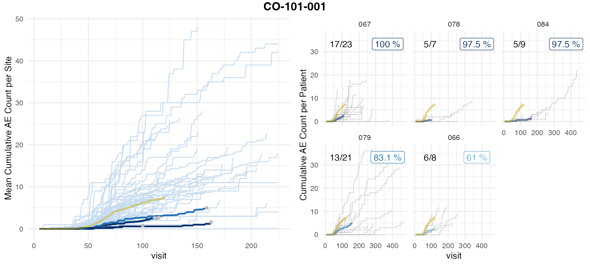

Introduction
We generally aggregate AEs by visit. Each patient follows the same
visit schedule and a specified number of days passes between each
consecutive visit. As visits are a scheduled contact point between the
patient and physicians the day of the visit usually also the day when
most AEs get reported. Alternatively we can also choose to use
simaerep to a
Load Data
We load some a public clinical trial data set which only contains data of the control arm see SAS files as a Data Source Article
df_ae <- haven::read_sas('adae.sas7bdat') %>%
select(STUDYID, SUBJID, SITEID, AESTDY)
df_vs <- haven::read_sas('advs.sas7bdat') %>%
select(STUDYID, SUBJID, SITEID, ADY)
df_ae <- df_ae %>%
rename(DY = AESTDY) %>%
mutate(EVENT = "AE")
df_vs <- df_vs %>%
rename(DY = ADY) %>%
mutate(EVENT = "VS") %>%
# we ignore visits that have no date
filter(! is.na(DY)) %>%
# we are not interested in same day visits
distinct()
df_aevs <- bind_rows(df_ae, df_vs) %>%
# NA's get sorted towards the end thus AEs with no date get sorted towards last visit
arrange(STUDYID, SITEID, SUBJID, DY) %>%
group_by(STUDYID, SITEID, SUBJID) %>%
mutate(AE_NO = cumsum(ifelse(EVENT == "AE", 1, 0)),
VS_NO = cumsum(ifelse(EVENT == "VS", 1, 0))) %>%
# we remove patients with 0 visits
filter(max(VS_NO) > 0) %>%
# AE's before fist visit should register to visit 1 not zero
mutate(VS_NO = ifelse(VS_NO == 0, 1, VS_NO))
df_aevs_aggr <- df_aevs %>%
group_by(STUDYID, SITEID, SUBJID, VS_NO) %>%
summarise(MIN_AE_NO = min(AE_NO),
MAX_AE_NO = max(AE_NO),
.groups = "drop") %>%
group_by(STUDYID, SITEID, SUBJID) %>%
mutate(MAX_VS_PAT = max(VS_NO)) %>%
ungroup() %>%
# assign AEs that occur after last visit to last AE
mutate(
CUM_AE = ifelse(
VS_NO == MAX_VS_PAT,
MAX_AE_NO,
MIN_AE_NO)
)
df_visit <- df_aevs_aggr %>%
rename(
study_id = "STUDYID",
site_number = "SITEID",
patnum = "SUBJID",
n_ae = "CUM_AE",
visit = "VS_NO"
) %>%
select(study_id, site_number, patnum, n_ae, visit)Aggregate on Days
For aggregating on days we need to align the reference timelines of the single patients.
df_vs_min_max <- df_vs %>%
group_by(STUDYID, SUBJID, SITEID) %>%
summarise(min_DY = min(DY, na.rm = TRUE),
max_DY = max(DY, na.rm = TRUE),
.groups = "drop")
df_vs_min_max$min_DY[1:25]## [1] -7 -14 -14 -7 -3 -10 -19 -12 -6 -9 -9 -12 -8 -7 -6 -8 -3 -14 -7
## [20] -14 -19 -12 -9 -21 -28
df_vs_min_max$max_DY[1:25]## [1] 309 134 43 1 224 265 100 163 51 103 40 38 125 168 85 92 100 708 119
## [20] 64 43 51 70 1 225The day of the first visit is different for each patient and they start at negative values. First we correct all values to be positive and then normalize the AE date values to the date value of the first visit of each patient
corr_factor <- abs(min(df_vs_min_max$min_DY))
df_days <- df_ae %>%
# include patients with vs but no AE
right_join(df_vs_min_max, by = c("STUDYID", "SUBJID", "SITEID")) %>%
# replace DY NULL with max patient DY
group_by(STUDYID, SUBJID, SITEID) %>%
mutate(DY = ifelse(is.na(DY) & ! is.na(EVENT), max(DY, na.rm = TRUE), DY)) %>%
# replace DY for patients with 0 AE with day of maximum visit
mutate(DY = ifelse(is.na(DY) & is.na(EVENT), max_DY, DY)) %>%
# correct timelines
mutate(DY = DY + corr_factor,
min_DY = min_DY + corr_factor,
DY_corr = DY + min_DY) %>%
group_by(STUDYID, SITEID, SUBJID) %>%
arrange(STUDYID, SITEID, SUBJID, DY_corr) %>%
mutate(n_ae = row_number()) %>%
ungroup() %>%
# set AE count to 0 for patients with no AEs
mutate(n_ae = ifelse(is.na(EVENT), 0 , n_ae)) %>%
rename(
study_id = STUDYID,
site_number = SITEID,
patnum = SUBJID,
visit = DY_corr
) %>%
group_by(study_id, site_number, patnum, visit) %>%
summarise(n_ae = max(n_ae), .groups = "drop")check if we get the same transformation as for the visit aggregations
stopifnot(n_distinct(df_days$site_number) == n_distinct(df_visit$site_number))
stopifnot(n_distinct(df_days$patnum) == n_distinct(df_visit$patnum))
pat0_days <- df_days %>%
group_by(study_id, site_number, patnum) %>%
filter(max(n_ae) == 0) %>%
pull(patnum) %>%
unique() %>%
sort()
pat0_vs <- df_visit %>%
group_by(study_id, site_number, patnum) %>%
filter(max(n_ae) == 0) %>%
pull(patnum) %>%
unique() %>%
sort()
stopifnot(all(pat0_days == pat0_vs))
df_days ## # A tibble: 3,220 × 5
## study_id site_number patnum visit n_ae
## <chr> <chr> <chr> <dbl> <dbl>
## 1 CO-101-001 001 01001001 43 1
## 2 CO-101-001 001 01001001 44 2
## 3 CO-101-001 001 01001001 107 3
## 4 CO-101-001 001 01001001 124 4
## 5 CO-101-001 001 01001001 134 5
## 6 CO-101-001 001 01001001 141 6
## 7 CO-101-001 001 01001001 156 8
## 8 CO-101-001 001 01001001 184 10
## 9 CO-101-001 001 01001001 240 13
## 10 CO-101-001 001 01001001 241 14
## # ℹ 3,210 more rowsWe do have gaps in between the days leading to implicitly missing
values. simaerep will correct this automatically and throw
a warning.
df_site <- site_aggr(df_visit = df_days)## Warning in exp_implicit_missing_visits(df_visit, event_names): implicitly
## missing visit numbers detected and correctedto silence the warning we can use check df_visit() which
is also called internally by all other functions accepting
df_visit as an argument.
df_days <- simaerep:::check_df_visit(df_days)## Warning in exp_implicit_missing_visits(df_visit, event_names): implicitly
## missing visit numbers detected and corrected
df_days## # A tibble: 57,873 × 5
## study_id site_number patnum visit n_ae
## <chr> <chr> <chr> <dbl> <dbl>
## 1 CO-101-001 001 01001001 5 0
## 2 CO-101-001 001 01001001 6 0
## 3 CO-101-001 001 01001001 7 0
## 4 CO-101-001 001 01001001 8 0
## 5 CO-101-001 001 01001001 9 0
## 6 CO-101-001 001 01001001 10 0
## 7 CO-101-001 001 01001001 11 0
## 8 CO-101-001 001 01001001 12 0
## 9 CO-101-001 001 01001001 13 0
## 10 CO-101-001 001 01001001 14 0
## # ℹ 57,863 more rowsThen we proceed as usual.
df_sim_sites <- sim_sites(df_site, df_visit = df_days)
df_eval_days <- eval_sites(df_sim_sites)
simaerep::plot_study(df_visit = df_days, df_site = df_site, df_eval = df_eval_days, study = unique(df_days$study_id))
Aggregate on Visits
How do the results compare to aggregating on visits?
df_site <- site_aggr(df_visit)
df_sim_sites <- sim_sites(df_site, df_visit)
df_eval_vs <- eval_sites(df_sim_sites)
simaerep::plot_study(df_visit, df_site, df_eval_vs, study = unique(df_visit$study_id))
Compare
We observe a difference in the results. Which is largely attributable in the difference in cut-off visit_med75 points that influences the set of patients included. In any case we observe a high rank correlation with a low p-value of all results greater 0.
As the inclusion/exclusion of patients in the analysis of a site in an ongoing trial can shift results, we recommend to aggregate on actually occurred visits because then all included patients had an equal amount of opportunities to report AEs.
df_comp <- df_eval_days %>%
select(
site_number,
prob_low_prob_ur_days = prob_low_prob_ur,
n_pat_with_med75_days = n_pat_with_med75
) %>%
left_join(
select(
df_eval_vs,
site_number,
prob_low_prob_ur_vs = prob_low_prob_ur,
n_pat_with_med75_vs = n_pat_with_med75
),
by = "site_number"
) %>%
filter(prob_low_prob_ur_days > 0 | prob_low_prob_ur_vs > 0) %>%
select(site_number, starts_with("prob"), starts_with("n_pat")) %>%
arrange(desc(prob_low_prob_ur_vs))
df_comp %>%
knitr::kable()| site_number | prob_low_prob_ur_days | prob_low_prob_ur_vs | n_pat_with_med75_days | n_pat_with_med75_vs |
|---|---|---|---|---|
| 078 | 0.9750000 | 0.9625000 | 5 | 5 |
| 084 | 0.9750000 | 0.9625000 | 5 | 5 |
| 073 | 0.4093750 | 0.8000000 | 6 | 5 |
| 067 | 1.0000000 | 0.7375000 | 17 | 15 |
| 079 | 0.8312500 | 0.6875000 | 13 | 12 |
| 086 | 0.4500000 | 0.6875000 | 5 | 5 |
| 071 | 0.0000000 | 0.2071429 | 2 | 3 |
| 066 | 0.6100000 | 0.1923077 | 6 | 5 |
| 069 | 0.1068182 | 0.1923077 | 3 | 5 |
| 070 | 0.4093750 | 0.1923077 | 15 | 17 |
| 080 | 0.1068182 | 0.1923077 | 20 | 20 |
| 085 | 0.1068182 | 0.1923077 | 1 | 1 |
| 090 | 0.0000000 | 0.1923077 | 3 | 4 |
cor.test(
df_comp$prob_low_prob_ur_vs,
df_comp$prob_low_prob_ur_days,
method = "spearman"
)## Warning in cor.test.default(df_comp$prob_low_prob_ur_vs,
## df_comp$prob_low_prob_ur_days, : Cannot compute exact p-value with ties##
## Spearman's rank correlation rho
##
## data: df_comp$prob_low_prob_ur_vs and df_comp$prob_low_prob_ur_days
## S = 114.71, p-value = 0.009797
## alternative hypothesis: true rho is not equal to 0
## sample estimates:
## rho
## 0.6848696